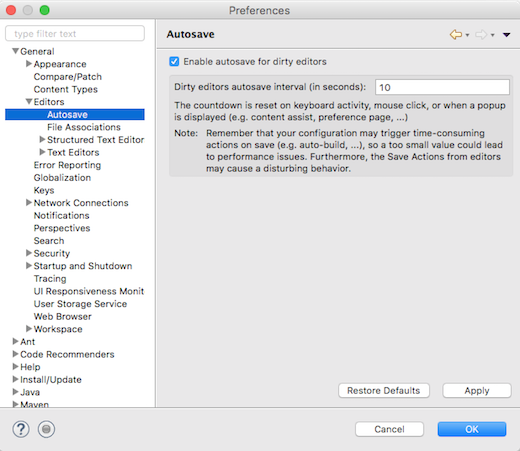

Compared to other ways to import or create projects, this wizard aims at being a universal wizard that, from a source directory or archive, can detect and configure various kinds of projects.

This wizard relies on an extensible set of strategies that look at the content of the import source to detect file types, project layout patterns, or even look into some files in order to deduct which folders should be turned into projects and how those should be configured. Configuration usually involves setting up project natures and preferences.
The import strategies are contributed via the new extension point org.eclipse.ui.ide.projectConfigurator, so that other IDE components
can contribute detection and configuration specific to the technology they're supporting.


This feature can be disabled in the Windows dark theme by setting the swt.enable.themedScrollBar
VM argument to false (or enabled on the dark theme for other platforms by setting it to true)
in eclipse.ini or on the command line after -vmargs:
-Dswt.enable.themedScrollBar=false
Note that it may be added through css to any theme (see
properties available for customization and a css example)
-- the user may always override the theme setting by using the swt.enable.themedScrollBar VM argument.
Caveats: We're aware that the themed scroll bar is not currently available for all elements (such as trees and tables), and some places where the scroll bar was invisible (such as compare editors) may now show a scroll bar. These will only be fixed for Eclipse 4.7.

Since this dialog has API to prevent advanced editing, if the property ALLOW_ADVANCED is set to false, the original list is maintained and will be shown, which allows you to enable/disable only the main categories (not individual capabilities).

You can now restrict the search to Views, Commands, etc. by typing the category name followed by a colon.
For example, to filter the list of all the views, start typing "Views: " in the search-box.
A few usability bugs have been fixed: The tooltip shows the keyboard shortcut, the number of search results per category is independent of the size of the proposals window, and the list with previous choices already opens when you click the field with the mouse.
This the name can be changed or cleared in Preferences > General > Workspace.
When Full Screen is activated, you'll see a dialog which tells you how to turn it off again.

The behavior not selected on the preference page can also be activated on-demand by holding the Shift key while launching the configuration from history.

Hint: You can still open the dialog to edit a launch configuration by holding the Ctrl key while selecting the configuration from history.
These builds are instead being replaced by the corresponding 64-bit builds. The 64-bit build for Solaris x86 is already available in M7 and the 64-bit SPARC build will be available soon.


@Retention, @Target and @Documented meta-annotations along with their applicable values while creating a new Java annotation type.


@NonNull annotation to the local variable.

While this may not produce correct code, it tells the compiler your intention to not
allow null in this variable, and subsequently the compiler will answer
with more helpful warnings or errors pointing to the root problem.
In the given example, it will alert you of subtleties about using unconstrained
type variables (see also Improved null analysis with generics (M6)):

(1) In the new Parentheses tab, you can order the formatter to keep parentheses of various Java elements on separate lines, i.e. put a line break after the opening parenthesis and before the closing parenthesis. This can be done always, only when parentheses are not empty, or when their content is wrapped. There's also an option to preserve existing positions, if you want to manually manage parentheses positions on a case-by-case basis.

(2) In the Line Wrapping tab, you can set the wrapping policy for parameterized types.

(3) Also in the Line Wrapping tab, you can decide to wrap before or after operators in assignments and conditional expressions.


Bundle-ActivationPolicy: lazy header is necessary when starting an Eclipse application that uses the Equinox launcher.
Otherwise, the bundle that provides the declarative service will not be started automatically and therefore the service won't be available.
In a plain OSGi environment, this header is not necessary and might not have any effect. Therefore, it can be configured via preferences
whether the header should be generated or not.

'NoMove' tag.

MCommand, your MHandledMenuItem or your MDirectMenuItem model elements by adding an entry to the Persisted State Map with the key 'HelpContextId' and your help context id as the value.

ISideEffect and ISideEffectFactory interfaces and the CompositeSideEffect class
have been moved to a new package org.eclipse.core.databinding.observable.sideeffect.
ISideEffectFactory to create several ISideEffect instances that share the same life cycle.
For example, all ISideEffect instances that are created by the ISideEffectFactory obtained from the WidgetSideEffects#createFactory(Widget disposableWidget) method are automatically disposed once the corresponding widget is disposed.
Example:
ISWTObservableValue personFirstNameTextObservable = WidgetProperties.text(SWT.Modify) .observe(personFirstNameText); ISWTObservableValue personLastNameTextObservable = WidgetProperties.text(SWT.Modify) .observe(personLastNameText); ISideEffectFactory sideEffectFactory = WidgetSideEffects.createFactory(personFirstNameText); sideEffectFactory.create(person::getFirstName, personFirstNameText::setText); sideEffectFactory.create(personFirstNameTextObservable::getValue, person::setFirstName); sideEffectFactory.create(person::getLastName, personLastNameText::setText); sideEffectFactory.create(personLastNameTextObservable::getValue, person::setLastName);
"org.eclipse.swt.internal.deviceZoom"
Note: This is a read-only value, so setting it on the command line doesn't make sense.
Furthermore, SWT doesn't use the deviceZoom when HighDPI support is disabled via -Dswt.enable.autoScale=false